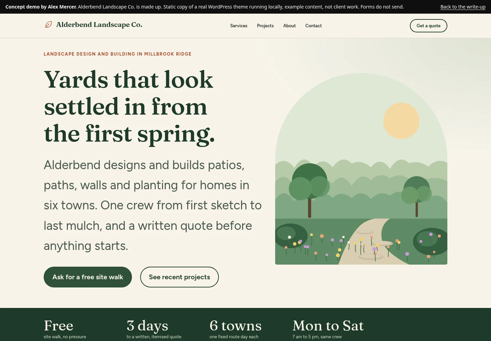
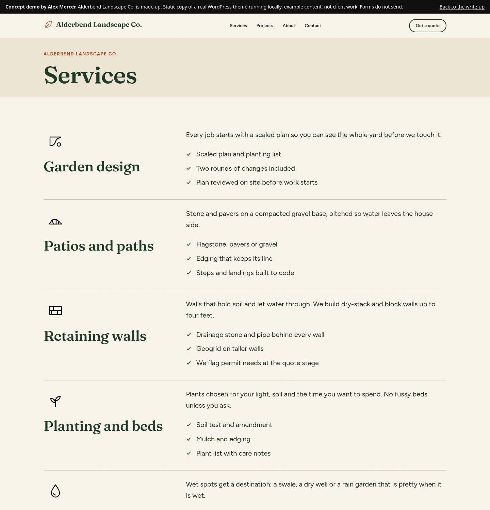
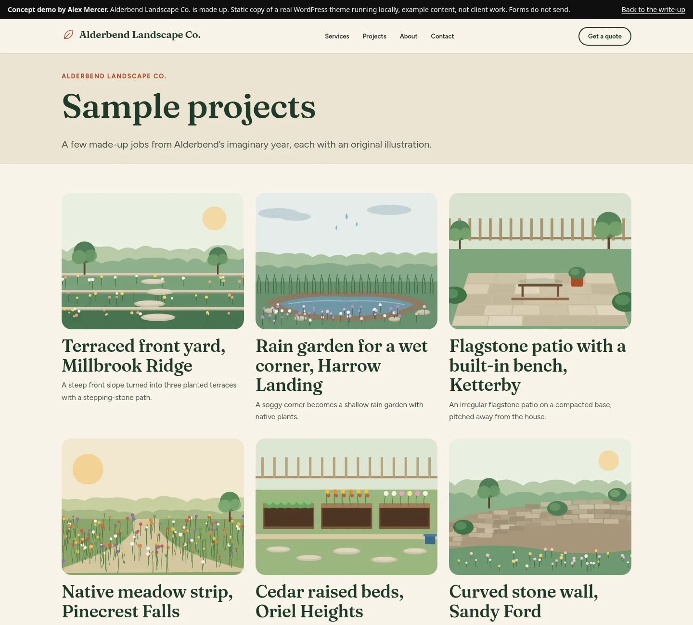
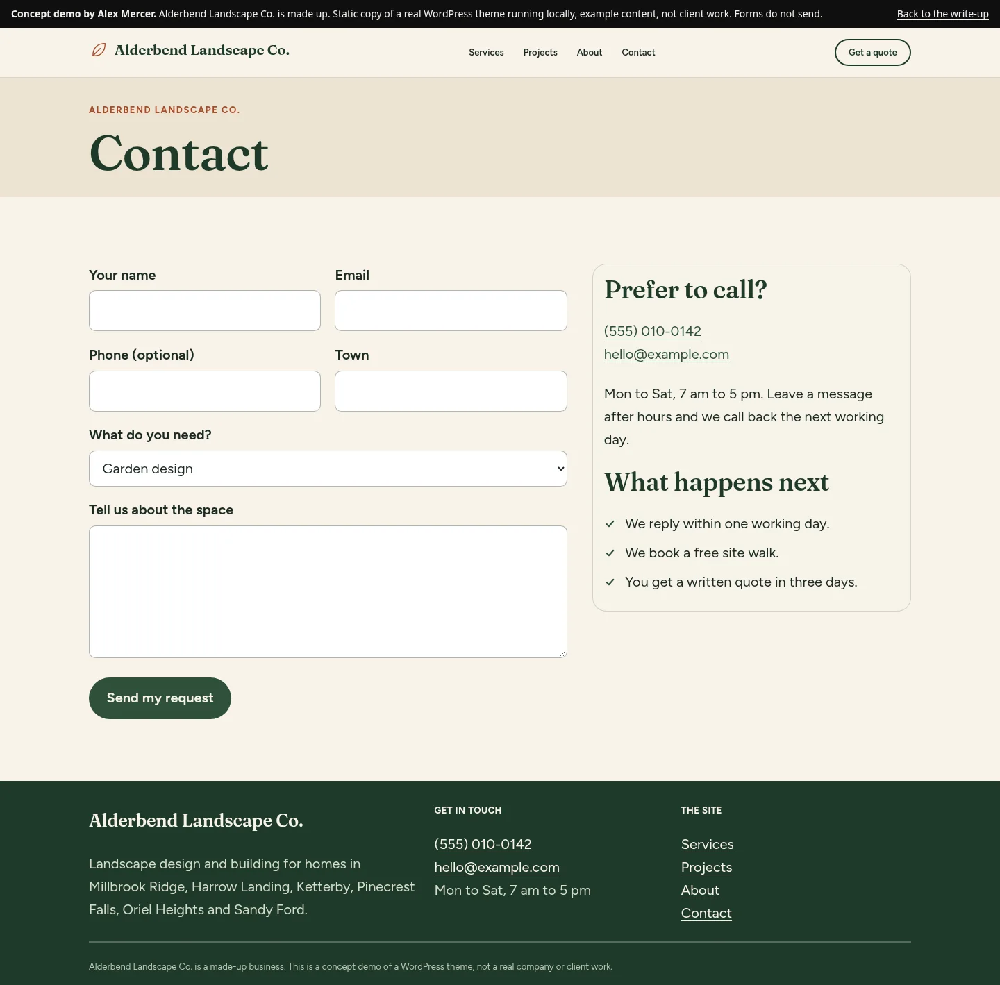
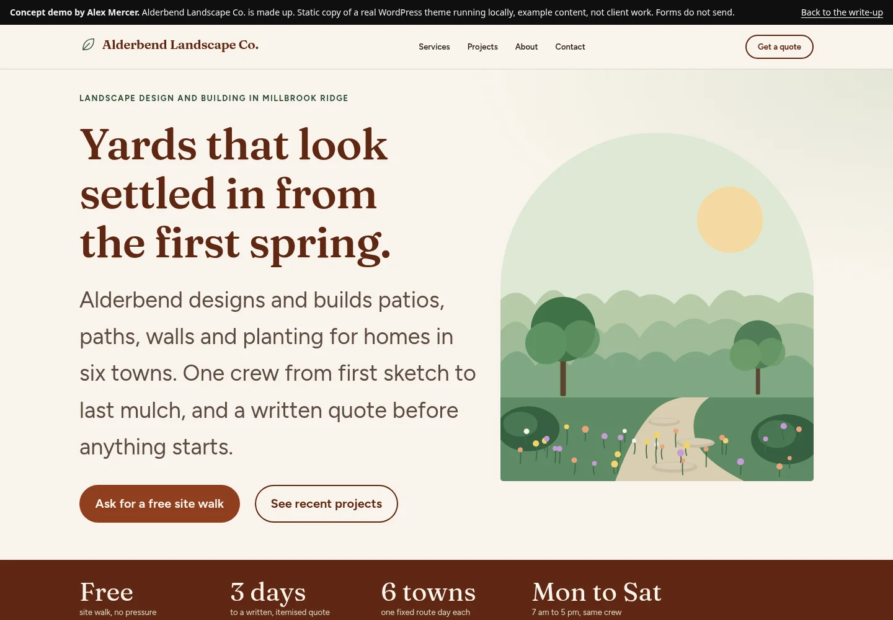
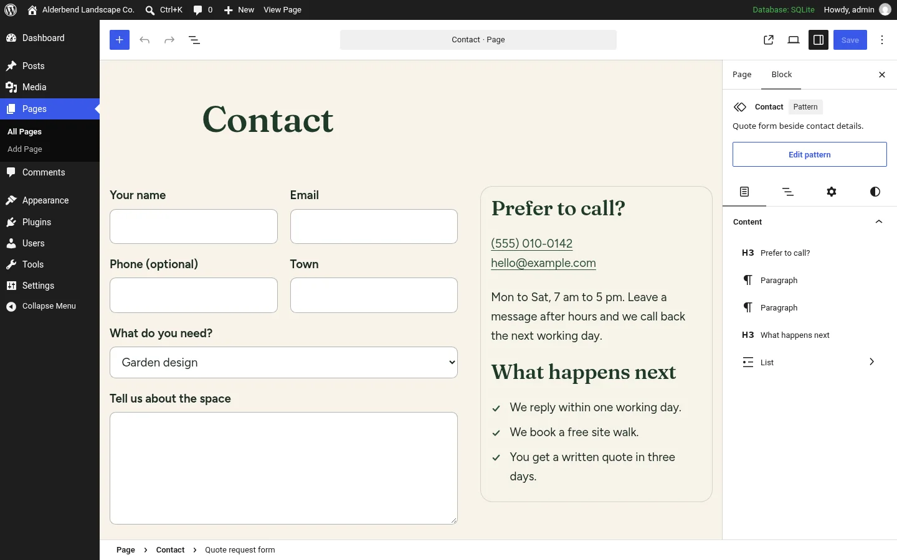
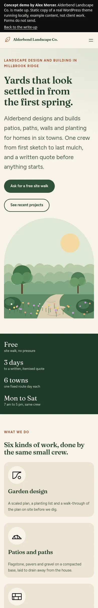

WordPress · Block theme · PHP, theme.json, patterns
A WordPress theme written from scratch for a small landscaping business.
No starter theme, no framework, no page builder. A full-site-editing theme for a made-up landscaper: design tokens in theme.json, 16 patterns, two small custom blocks, a quote form that checks and escapes everything, and tests you can read.
Alderbend Landscape Co. is made up, and so are its towns, projects and phone number. This is a concept demo, not client work, and it has not run on a real business's site. The demo site is a static copy of the theme running in a real WordPress; it is explained under what was tested.

block.json + PHP render)theme.json)The real thing
The theme, rendered.
Both frames below are the actual demo site. It was exported from the theme running in WordPress on my machine, so every link, the phone menu and the town checker work. The quote form only explains itself, because GitHub Pages cannot run PHP.
Same site at phone width. Try the menu button.






What's inside
Everything a small-business site needs, nothing it doesn't.
Design tokens, not CSS
8-colour palette, a fluid type scale, a spacing scale, shadow and radius presets, and styling for headings, links, buttons, navigation and more. 7.2 KB of JSON drives most of the look.
Full site editing
Front page, page, wide page, projects index, archive, single project, search and 404, with a header and footer part. Everything is editable in the Site Editor.
Real block markup
Hero, facts strip, services, projects, process, seasons, service area, call to action, FAQ and more. PHP patterns, so links use home_url() and text is translatable.
Service area checker
Lists towns with a route day and lets a visitor type theirs. Server-rendered, with 1.8 KB of JavaScript loaded only on pages that have the block.
Quote request form
Nonce, honeypot, per-field validation, a one-minute rate limit, header-injection-safe subject and an email to the site owner. Errors keep what was typed.
Choices in the editor
Card and soft-panel groups, arch images, checklist lists, kicker paragraphs, ghost buttons, and a second colour scheme in the Styles panel.
Built in, then checked
Skip link, one h1 per page, landmarks, visible focus rings, labelled fields with aria-invalid and described errors, role="status" notices, reduced-motion support.
Small and local
Home page: 80 KB HTML, 36 KB CSS, 100 KB fonts, 41 KB images, 47 KB script. No CDN, no tracking, no Google Fonts.
Translation-ready
Every string uses the alderbend text domain and there is a generated .pot file with 239 strings.
Code excerpts
Read the parts that matter.
These snippets are pulled from the files in the repository when this page is built, so they match the code. Full files are on GitHub.
"layout": { "contentSize": "42rem", "wideSize": "74rem" },
"color": {
"defaultPalette": false,
"defaultDuotone": false,
"palette": [
{ "slug": "base", "name": "Cream", "color": "#f7f3ea" },
{ "slug": "surface", "name": "Sand", "color": "#ece4d2" },
{ "slug": "sage", "name": "Sage", "color": "#d3dccb" },
{ "slug": "contrast", "name": "Ink", "color": "#1c2a22" },
{ "slug": "muted", "name": "Moss ink", "color": "#46564b" },
{ "slug": "primary", "name": "Fern", "color": "#2f5039" },
{ "slug": "primary-dark", "name": "Deep fern", "color": "#1f3a29" },
{ "slug": "accent", "name": "Clay", "color": "#a94a28" }
],
"gradients": [
…<div class="wp-block-columns alignwide are-vertically-aligned-center ab-hero__cols"><!-- wp:column {"verticalAlignment":"center","width":"56%"} -->
<div class="wp-block-column is-vertically-aligned-center" style="flex-basis:56%"><!-- wp:paragraph {"className":"is-style-alderbend-kicker"} -->
<p class="is-style-alderbend-kicker"><?php esc_html_e( 'Landscape design and building in Millbrook Ridge', 'alderbend' ); ?></p>
<!-- /wp:paragraph -->
<!-- wp:heading {"level":1} -->
<h1 class="wp-block-heading"><?php esc_html_e( 'Yards that look settled in from the first spring.', 'alderbend' ); ?></h1>
<!-- /wp:heading -->
<!-- wp:paragraph {"fontSize":"large","textColor":"muted"} -->
<p class="has-muted-color has-text-color has-large-font-size"><?php esc_html_e( 'Alderbend designs and builds patios, paths, walls and planting for homes in six towns. One crew from first sketch to last mulch, and a written quote before anything starts.', 'alderbend' ); ?></p>
<!-- /wp:paragraph -->
<!-- wp:buttons -->
<div class="wp-block-buttons"><!-- wp:button -->
<div class="wp-block-button"><a class="wp-block-button__link wp-element-button" href="<?php echo esc_url( home_url( '/contact/' ) ); ?>"><?php esc_html_e( 'Ask for a free site walk', 'alderbend' ); ?></a></div>
<!-- /wp:button -->
<!-- wp:button {"className":"is-style-alderbend-ghost"} -->
<div class="wp-block-button is-style-alderbend-ghost"><a class="wp-block-button__link wp-element-button" href="<?php echo esc_url( home_url( '/projects/' ) ); ?>"><?php esc_html_e( 'See recent projects', 'alderbend' ); ?></a></div>
<!-- /wp:button --></div>
<!-- /wp:buttons --></div>$towns = alderbend_clean_towns( isset( $attributes['towns'] ) ? $attributes['towns'] : array() );
if ( empty( $towns ) ) {
return;
}
$uid = wp_unique_id( 'ab-area-' );
$wrapper = get_block_wrapper_attributes( array( 'class' => 'ab-area' ) );
$messages = array(
/* translators: 1: town name, 2: weekday. */
'found' => __( 'Yes, we are in %1$s. Our crew is there on %2$ss.', 'alderbend' ),
/* translators: %s: town name. */
'foundAny' => __( 'Yes, we work in %s.', 'alderbend' ),
'missing' => __( 'That town is not on our route yet. Send a quote request anyway and we will tell you honestly.', 'alderbend' ),
);
?>
<div <?php echo $wrapper; // phpcs:ignore WordPress.Security.EscapeOutput.OutputNotEscaped -- Escaped by get_block_wrapper_attributes(). ?> data-ab-area data-messages="<?php echo esc_attr( wp_json_encode( $messages ) ); ?>" data-towns="<?php echo esc_attr( wp_json_encode( $towns ) ); ?>">
<label class="ab-area__label" for="<?php echo esc_attr( $uid ); ?>"><?php esc_html_e( 'Check your town', 'alderbend' ); ?></label>
<input class="ab-area__input" id="<?php echo esc_attr( $uid ); ?>" type="text" list="<?php echo esc_attr( $uid ); ?>-list" autocomplete="off" placeholder="<?php esc_attr_e( 'Start typing a town', 'alderbend' ); ?>" aria-describedby="<?php echo esc_attr( $uid ); ?>-result">
<datalist id="<?php echo esc_attr( $uid ); ?>-list">
<?php foreach ( $towns as $town ) : ?>
<option value="<?php echo esc_attr( $town['name'] ); ?>"></option>
<?php endforeach; ?>
</datalist>
<p class="ab-area__result" id="<?php echo esc_attr( $uid ); ?>-result" role="status" aria-live="polite"></p>
<ul class="ab-area__list">
<?php foreach ( $towns as $town ) : ?>
<li>
<span class="ab-area__town"><?php echo esc_html( $town['name'] ); ?></span>
<?php if ( '' !== $town['day'] ) : ?>
<span class="ab-area__day"><?php echo esc_html( $town['day'] ); ?></span>
<?php endif; ?>
</li>
<?php endforeach; ?>
</ul>function alderbend_validate_quote( array $raw ) {
$values = array(
'name' => isset( $raw['name'] ) ? sanitize_text_field( (string) $raw['name'] ) : '',
'email' => isset( $raw['email'] ) ? sanitize_email( (string) $raw['email'] ) : '',
'phone' => isset( $raw['phone'] ) ? sanitize_text_field( (string) $raw['phone'] ) : '',
'town' => isset( $raw['town'] ) ? sanitize_text_field( (string) $raw['town'] ) : '',
'service' => isset( $raw['service'] ) ? sanitize_text_field( (string) $raw['service'] ) : '',
'message' => isset( $raw['message'] ) ? sanitize_textarea_field( (string) $raw['message'] ) : '',
);
$errors = array();
if ( '' === $values['name'] ) {
$errors['name'] = __( 'Please tell us your name.', 'alderbend' );
} elseif ( mb_strlen( $values['name'] ) > 80 ) {
$errors['name'] = __( 'That name is a bit long. 80 characters at most.', 'alderbend' );
}
if ( '' === $values['email'] || ! is_email( $values['email'] ) ) {
$errors['email'] = __( 'That email address does not look right.', 'alderbend' );
}
if ( '' !== $values['phone'] && ! preg_match( '/^[0-9+().\s-]{7,20}$/', $values['phone'] ) ) {
$errors['phone'] = __( 'Use digits, spaces and dashes only, 7 to 20 characters.', 'alderbend' );
}
if ( '' === $values['town'] ) {
$errors['town'] = __( 'Which town is the job in?', 'alderbend' );
} elseif ( mb_strlen( $values['town'] ) > 60 ) {
$errors['town'] = __( 'That town name is too long.', 'alderbend' );
}
if ( mb_strlen( $values['message'] ) < 10 ) {
$errors['message'] = __( 'A sentence or two about the space helps us a lot (10 characters at least).', 'alderbend' );
} elseif ( mb_strlen( $values['message'] ) > 3000 ) {
$errors['message'] = __( 'Please keep it under 3,000 characters.', 'alderbend' );
}
return array(
…function alderbend_handle_quote() {
$back = wp_get_referer();
$back = $back ? $back : home_url( '/contact/' );
$back = remove_query_arg( array( 'quote', 'qref' ), $back );
if ( ! isset( $_POST['alderbend_nonce'] ) || ! wp_verify_nonce( sanitize_text_field( wp_unslash( $_POST['alderbend_nonce'] ) ), 'alderbend_quote' ) ) {
wp_die( esc_html__( 'This form has expired. Please go back, reload the page and try again.', 'alderbend' ), '', array( 'response' => 403 ) );
}
// Honeypot: real visitors never see or fill this field. Pretend success.
if ( ! empty( $_POST['company_site'] ) ) {
wp_safe_redirect( add_query_arg( 'quote', 'sent', $back ) . '#quote-form' );
exit;
}
$ip_key = 'alderbend_q_' . md5( isset( $_SERVER['REMOTE_ADDR'] ) ? sanitize_text_field( wp_unslash( $_SERVER['REMOTE_ADDR'] ) ) : 'unknown' );
if ( get_transient( $ip_key ) ) {
wp_safe_redirect( add_query_arg( 'quote', 'wait', $back ) . '#quote-form' );
exit;
}
function check() {
var value = input.value.trim().toLowerCase();
var match = null;
out.textContent = '';
out.removeAttribute( 'data-state' );
root.querySelectorAll( '.ab-area__list li' ).forEach( function ( li ) {
li.classList.remove( 'is-match' );
} );
if ( value.length < 3 ) {
return;
}
towns.forEach( function ( t ) {
if ( ! match && t.name.toLowerCase() === value ) {
match = t;
}
} );
if ( match ) {
out.textContent = match.day
? fill( messages.found, [ match.name, match.day ] )
: fill( messages.foundAny, [ match.name ] );
out.setAttribute( 'data-state', 'yes' );
root.querySelectorAll( '.ab-area__list li' ).forEach( function ( li ) {
if ( li.querySelector( '.ab-area__town' ).textContent === match.name ) {
li.classList.add( 'is-match' );
}
} );
} else if ( towns.every( function ( t ) { return t.name.toLowerCase().indexOf( value ) !== 0; } ) ) {
out.textContent = messages.missing;
out.setAttribute( 'data-state', 'no' );
}
}File tree
63 files, 1,589 lines of PHP.
Fonts: Fraunces and Figtree, self-hosted, SIL Open Font License (texts in assets/fonts/). Illustrations: original SVG drawn for this demo by tools/make_images.py. No stock photos and no external requests.
Real output
What was run, and what it said.
Run on WordPress 7.1.5, PHP 8.5.8 with SQLite, PHP's built-in server and headless Chrome. The raw output is below and in docs/evidence/.
Lint, PHPCS, tests inside WordPress and HTTP tests (120 checks)
== PHP lint == lint done == PHPCS (WordPress-Extra, WordPress-Docs) == ...................... 22 / 22 (100%) Time: 4.14 secs; Memory: 16MB == Tests inside WordPress == Theme ok theme is installed ok WordPress sees it as a block theme ok theme is active ok version header read theme.json ok palette has primary and accent ok two font families (Fraunces, Figtree) ok wide size is 74rem ok global stylesheet emits palette variables ok font files are declared in theme.json and exist on disk ok no Google Fonts request ok the Clay and sage style variation loads Templates and parts ok template front-page ok template page ok template page-wide ok template index ok template archive ok template single ok template search ok template 404 ok part header ok part footer Patterns and blocks ok pattern alderbend/hero registered ok pattern alderbend/facts-strip registered ok pattern alderbend/services-grid registered ok pattern alderbend/featured-projects registered ok pattern alderbend/process registered ok pattern alderbend/seasons registered ok pattern alderbend/service-area registered ok pattern alderbend/cta registered ok pattern alderbend/faq registered ok pattern alderbend/services-detail registered ok pattern alderbend/about registered ok pattern alderbend/contact registered ok pattern alderbend/page-heading registered ok pattern alderbend/header-inner registered ok pattern alderbend/footer-inner registered ok block alderbend/service-area registered ok block alderbend/quote-form registered ok group block styles registered alderbend_clean_towns() ok drops empty, non-array and malformed rows ok trims names ok strips tags from names ok rejects a day outside Monday to Saturday ok non-array input gives an empty list alderbend_validate_quote() ok a complete request passes ok empty request flags name, email, town and message ok phone is optional ok bad email is rejected ok letters in the phone field are rejected ok a one-word message is rejected ok a 3,001 character message is rejected ok tags are stripped from the name ok a name over 80 characters is rejected alderbend_quote_subject() ok line breaks are removed from the subject (header injection) 54 passed, 0 failed == HTTP tests == Pages ok / returns 200 ok / has "Yards that look settled" ok / has exactly one h1 ok / sets the page language ok / loads nothing from a CDN ok / has header, main and footer landmarks ok /: every image has an alt attribute ok /services/ returns 200 ok /services/ has "Services" ok /services/ has exactly one h1 ok /services/ sets the page language ok /services/ loads nothing from a CDN ok /services/ has header, main and footer landmarks ok /services/: every image has an alt attribute ok /projects/ returns 200 ok /projects/ has "Sample projects" ok /projects/ has exactly one h1 ok /projects/ sets the page language ok /projects/ loads nothing from a CDN ok /projects/ has header, main and footer landmarks ok /projects/: every image has an alt attribute ok /about/ returns 200 ok /about/ has "About" ok /about/ has exactly one h1 ok /about/ sets the page language ok /about/ loads nothing from a CDN ok /about/ has header, main and footer landmarks ok /about/: every image has an alt attribute ok /contact/ returns 200 ok /contact/ has "Contact" ok /contact/ has exactly one h1 ok /contact/ sets the page language ok /contact/ loads nothing from a CDN ok /contact/ has header, main and footer landmarks ok /contact/: every image has an alt attribute ok /rain-garden/ returns 200 ok /rain-garden/ has "Rain garden" ok /rain-garden/ has exactly one h1 ok /rain-garden/ sets the page language ok /rain-garden/ loads nothing from a CDN ok /rain-garden/ has header, main and footer landmarks ok /rain-garden/: every image has an alt attribute ok unknown URL returns 404 ok 404 page uses the theme 404 template Assets ok theme.css is enqueued ok theme.css is served ok font-face rules point at the bundled Fraunces file ok Figtree woff2 is served from the theme ok service-area view script is loaded where the block is used ok service-area view script is not loaded on a page without the block ok skip link is present Service area block ok town list renders ok datalist renders ok towns and route days render Quote form round trip ok form carries a nonce ok bad nonce is refused with 403 ok invalid input redirects back with an error token ok error page shows the message, marks the field and keeps what was typed ok honeypot gets a fake success ok honeypot sends no email ok valid request redirects with quote=sent ok one email goes to the site admin address ok subject names the service and town ok body carries the request ok a second request within a minute is held back ok success notice is announced with role=status 66 passed, 0 failed exit: 0
WordPress.org Theme Check plugin (one required item, explained below)
Theme Check plugin: required items found - REQUIRED: The theme uses the register_block_type() function in the file inc/blocks.php. register_block_type() is plugin-territory functionality and must not be used in themes. Use a plugin instead. Line 16: register_block_type( get_theme_file_path( 'blocks/service-area' ) );Line 17: register_block_type( get_theme_file_path( 'blocks/quote-form' ) ); - INFO: Possible Favicon found in functions.php. Favicons are handled by the Site Icon setting in the customizer since version 4.3. - INFO: Only one text-domain is being used in this theme. Make sure it matches the theme's slug correctly so that the theme will be compatible with WordPress.org language packs. The domain found is alderbend.
Block editor validation of every pattern
{"total":250,"invalid":[],"names":22}
no validation messages
other console errors: 1
warning: global-styles-css-custom-properties-inline-css was added to the iframe incorrectly. Please use block.json or enqueue_block_assets to add styles to the iframe. style#global-styles-css-custom-properties-inline-css
Click-through checks on the static export
ok phone shows the menu button ok menu button opens the overlay ok overlay lists Services, Projects, About, Contact ok close button closes it ok desktop shows the links, not the menu button ok town checker: Ketterby is served on Wednesdays ok town checker highlights the matching row ok town checker: unknown town gets an honest no ok town checker: stays quiet under 3 characters ok demo form explains that nothing is sent ok demo form does not navigate away no console errors 11 passed, 0 failed
Install
Three ways to try it.
- Upload the zip. In WordPress go to Appearance, Themes, Add New, Upload Theme and pick
alderbend-theme.zip(273 KB). Activate it. Needs WordPress 6.5 or newer. - Make the pages. The header links expect pages with the slugs
services,projects,aboutandcontact. Set a Home page as the front page and Projects as the posts page. Or let the seed script do it, with the made-up content:git clone https://github.com/alexmercer-projects/alderbend-wordpress-theme cp -r alderbend-wordpress-theme/theme/alderbend wp-content/themes/ WP="wp --path=/path/to/wordpress" bash alderbend-wordpress-theme/demo/seed.sh
- Make it yours. Change colours and type in Appearance, Editor, Styles (or edit
theme.json), swap the text in the patterns, and set the quote form's recipient under Settings, General (it uses the site admin email).
To run the checks yourself you need PHP 8, WP-CLI, PHPCS with the WordPress standards, Node 22 and Chrome; tools/run-tests.sh lists the rest.
Straight talk
What was tested, and what wasn't.
Tested
- Runs on WordPress 7.1.5, PHP 8.5.8 (SQLite database, PHP built-in server), activated as a normal theme.
- PHP lint and PHPCS (WordPress-Extra, WordPress-Docs) clean; the Theme Check plugin's only required item is explained at right.
- 15 of the 16 patterns (all but the one-button 404 pattern) and both blocks open in the block editor without validation errors.
- The quote form: bad nonce refused, bad input redirected with messages, honeypot, rate limit and the email contents, tested against a stand-in for
wp_mail(). - Headless Chrome at 1440 and 390 px: no horizontal scroll, no console errors (the 404 page's own 404 status aside), no outside requests; phone menu and town checker clicked through.
Not tested, or not claimed
- MySQL or MariaDB, Apache or nginx, other PHP versions (the header says 7.4+ but I only ran 8.5), multisite, caching or SEO plugins.
- Firefox, Safari, real phones, screen readers, or an accessibility audit tool. The accessibility features are there; I haven't had them independently reviewed.
- Real email delivery. On a live site, mail depends on the host or an SMTP plugin.
- The WordPress.org theme review. Theme Check flags
register_block_type()because blocks are "plugin territory" there; I kept the two blocks in the theme because they are part of this one site's design. To list it on wordpress.org they would move into a plugin. - The demo here is static: forms don't send and nothing runs PHP. It is a rendered copy, not a hosted WordPress. No client, traffic, leads or results are claimed.